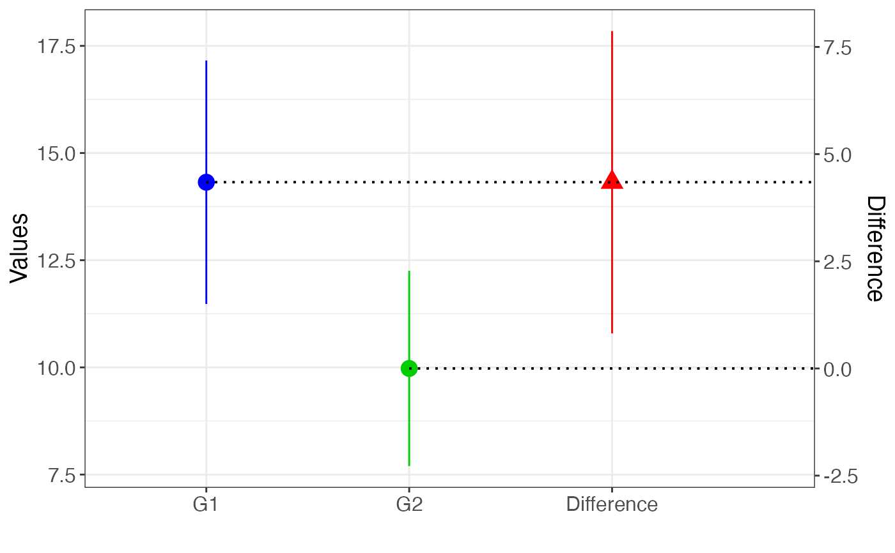
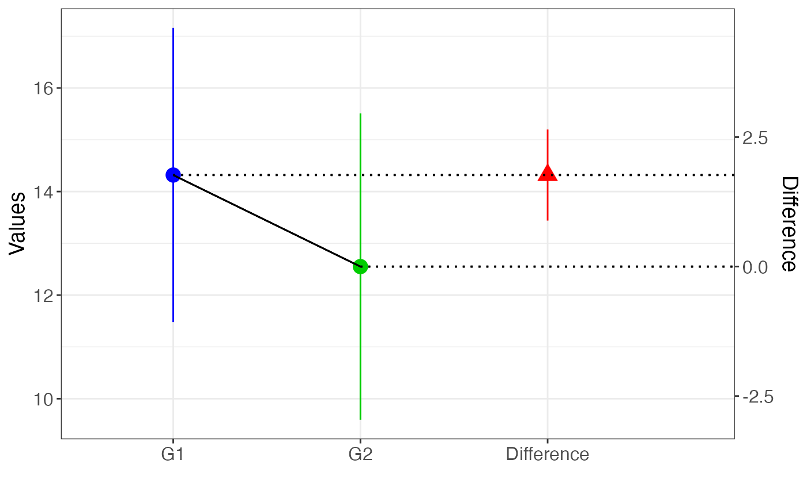

New Statistics two samples (idependent & dependent)
Source:R/NewStats_2samples.R
NewStats_2samples.RdIt plots the two samples and the difference between them with their confidence intervals (CI), based on the two samples being independent or dependent.
Usage
NewStats_2samples(
x,
y,
dep = FALSE,
conf.level = 0.95,
col.x = "blue",
col.y = "green3",
col.diff = "red",
ylab.diff = "Difference"
)Arguments
- x
Sample 1
- y
Sample 2
- dep
Logical indicating if the samples are dependent (Default is F)
- conf.level
Confidence level for the interval (Default is 0.95)
- col.x
Color to use for sample 1
- col.y
Color to use for sample 2
- col.diff
Color to use for the difference
- ylab.diff
Label for the secondary y-axis for the difference
Details
The labels of the plot are generic but they can be customised using the labs() and scale_x_discrete(labels = c()) functions. For the dependent samples case the two means are joined by a line, to indicate the dependency
References
Cumming, G. (2014). The New Statistics: Why and How - Psychological Science, 25(1): 7-29.
See also
Other statistics:
NewStats_contrasts(),
R_crit(),
Spearman_crit(),
ci_chisq(),
pval_chisq()
Examples
set.seed(101)
x = rnorm(20, 15, 7)
y = rnorm(20, 10, 5)
y1 = rnorm(20,x/1.1,2)
NewStats_2samples(x, y, dep = FALSE)
#> Warning: Using `size` aesthetic for lines was deprecated in ggplot2 3.4.0.
#> ℹ Please use `linewidth` instead.
#> ℹ The deprecated feature was likely used in the GMisc package.
#> Please report the issue at <https://github.com/maxgav13/GMisc/issues>.
#> Warning: All aesthetics have length 1, but the data has 3 rows.
#> ℹ Please consider using `annotate()` or provide this layer with data containing
#> a single row.
#> Warning: All aesthetics have length 1, but the data has 3 rows.
#> ℹ Please consider using `annotate()` or provide this layer with data containing
#> a single row.

NewStats_2samples(x, y1, dep = TRUE)
#> Warning: All aesthetics have length 1, but the data has 3 rows.
#> ℹ Please consider using `annotate()` or provide this layer with data containing
#> a single row.
#> Warning: All aesthetics have length 1, but the data has 3 rows.
#> ℹ Please consider using `annotate()` or provide this layer with data containing
#> a single row.
#> Warning: All aesthetics have length 1, but the data has 3 rows.
#> ℹ Please consider using `annotate()` or provide this layer with data containing
#> a single row.
